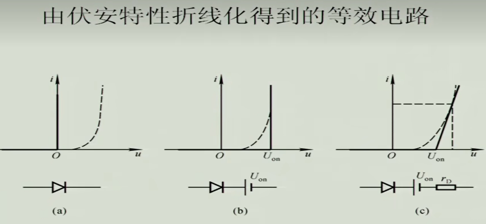
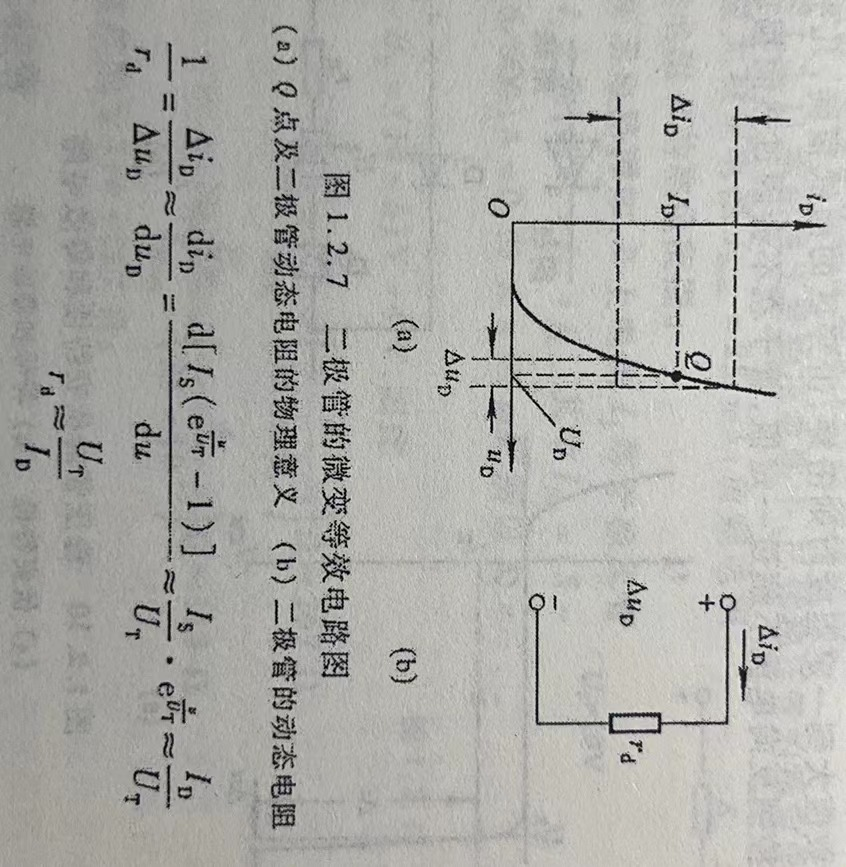
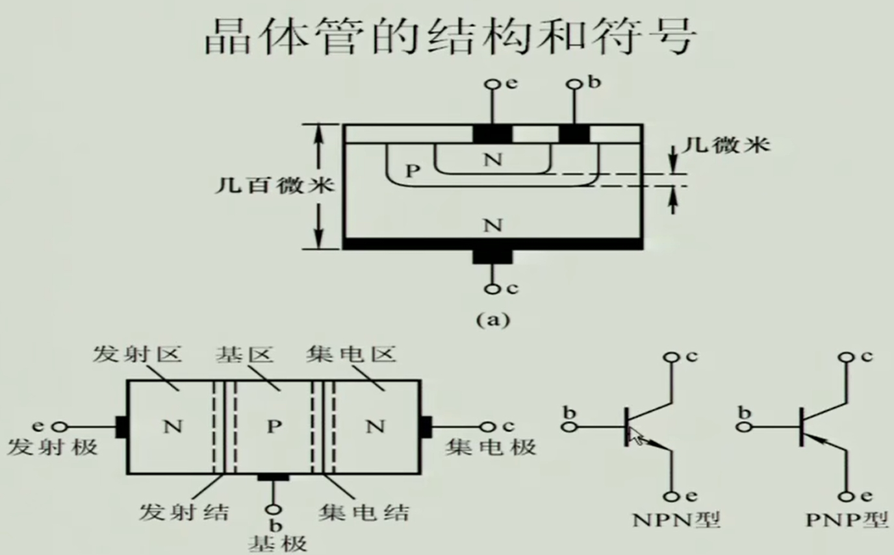

本课最大的收获是习得了上课隐身术，只有聪明的人才能看到我。
—— updated on 2023/10/10 ———-
老师上课点名，隐身术失效了呜呜呜 🥲
写在前面
本笔记内容排布主要参考于华成英主编的《模拟电子技术基础》。
同时内容一定程度上参考于华成英的《模拟电子技术基础》和 b 站上交郑益慧老师的视频。
Attention !!!
大写字母，大写下标，表示直流量（静态值）。
大写字母，小写下标，表示交流分量有效值。
小写字母，大写下标，表示交、直流混合量。
小写字母，小写下标，表示交流瞬时量。
第一章 常用半导体器件
$\S 1.1$ 半导体基础知识
这部分了解即可。
物质按导电能力可分为导体，半导体和绝缘体，其中半导体主要材料是硅（Si），锗（Ge）和砷化镓（GaAs）。
研究半导体原子结构时，为简化起见，把内层电子和原子核视为一个整体，称为惯性核，其周围是价电子。
- 本征半导体
完全纯净的，晶体结构完整的半导体晶体称为本征半导体。在 $0K$ 温度下，没有自由移动的载流子，不能导电相当于绝缘体。而当温度升高时共价键中的价电子从外界获得能量而激发成自由电子，这种现象称为本征激发。
可以把激发出的空位视为带正电荷的载流子，并把它称为空穴。半导体时依靠自由电子和空穴导电的。
本征激发使两种载流子数量相等。空穴和自由电子相遇抵消的过程称为复合。温度一定时，两种载流子数目保持不变处于热平衡状态。
设 $n_i$ 为热平衡载流子浓度，$p_0, h_0$ 分别为空穴和载流子浓度，则有 $p_0 = n_0 = n_i$。但是这种半导体导电能力很弱。
本征激发和温度有关，复合和粒子浓度有关。
杂质半导体分为 $N$ 型（电子型）和 $P$ 型（空穴型）
- $N$ 型半导体
N 是 negative，指的是负的电子。
向半导体中加入少量五价元素，称五价元素为施主元素，自由电子为多数载流子，简称多子。空穴称为少子。
- $P$ 型半导体
P 是 positive，指的是正的空穴。
向半导体中加入少量三价元素，称三价元素为受主元素，空穴为多子。自由电子为少子。
杂质越多，多子浓度越高，导电性越强。少子浓度与温度有关。
- 漂移电流和扩散电流
在外加电场作用下，载流子的定向移动称为漂移运动，会产生漂移电流。
载流子由于浓度不一致会产生扩散运动，并产生扩散电流。
$PN$ 结的形成及特性
形成
利用掺杂的方法，使半导体一半是 $P$ 一半是 $N$，由于扩散运动使两边载流子不断中和之后，$P$ 区的负离子和 $N$ 区的正离子形成内建电场组织多子扩散。直到两边达到稳态，就形成了 $PN$ 结。
两边掺杂浓度一样可以形成对称结，反之形成不对称结。
中间的正负离子界面称为空间电荷区，又称为耗尽区 / 势垒区 / 阻挡区。
内建电场的电位差 $V_B$ 称为内建电位差，满足
$$
V_B \approx V_Tln\dfrac{N_aN_d}{n_i^2} \
V_T = \dfrac{kT}{q}
$$特性
正向特性：当电源正极接 P，负极接 N，称 PN 结外加正向电压，也称正向偏置。会使 PN 结减小（刚开始很小的时候，电子难过去，后来不断削弱阻挡区，电流指数级上涨）。
反向特性：当电源正极接 N，负极接 P，称 PN 结外加反向电压，也称反向偏置。会使 PN 结增大（阻挡区越来越厚，电子更难过去，不导通）。
伏安特性：PN 结的电流与端电压存在关系：
$$
i = I_s(e^{v/V_T} - 1)
$$$I_s$ 是反向饱和电流，$V_T$ 是和温度相关的，室温下 $V_T$ 是 26 mv。
Ge 作材料的晶体管导通电压是 0.2 ~ 0.3 V，Si 是 0.6 ~ 0.7 V。
当 PN 结正偏且 $\left | v \right | \gg V_T$ 时，式子可简化为
$$
i \approx I_se^{v/V_T}
$$
当 PN 结反偏且 $\left | v \right | \gg V_T$ 时，式子可简化为
$$
i \approx -I_s
$$其实反向的时候有一个非常非常小的电流。
击穿特性：当 PN 结的反向电压增大到某一值时，反向电流会突然增大，PN 结被击穿，击穿分为：雪崩击穿（掺杂浓度低的时候，PN 结宽）和齐纳击穿（掺杂浓度高的时候，PN 结窄）。
雪崩击穿：温度越高，所需击穿电压越高。齐纳击穿：温度越高，所需击穿电压越低。
PN 结的电容效应
PN 结具有电荷随着电压变化而变化的特性，与电容类似。
PN 结的结电容是由以下两种电容组成的。
势垒电容
由空间电荷区的电荷所导致。反向电压越大，PN 结越宽，空间电荷区越宽，电容越大。
扩散电容
由 P 区和 N 区粒子浓度差所导致。正向电压越大，N 区扩散来的电子越多，浓度越大，曲线也不断上升。这条曲线反映了从结到边缘处，粒子浓度越来越少。这种电容发生在扩散区内，是由靠近耗尽区和远离耗尽区的非平衡少子浓度差所造成的，且这种电荷的积累与释放过程与电容器充放电类似，故有电容效应，称为扩散电容。
$\S 1.2$ 半导体二极管
将 PN 结封装起来引出两根引线，形成二极管。
常见结构
二极管的伏安特性
伏安特性
和 PN 结几乎一样，只是多了个外壳对电阻的影响。
由于体电阻的存在，二极管电流比 PN 结小。反向电流比 PN 结大一些。
温度对电阻的影响：
正向：相同电压下，温度越高，电流越大。
反向：相同电压下，温度越高，少子浓度越高，反向电流越大。
二极管的主要参数
最大整流电流 $I_F$
二极管长期运行时所允许的的最大正向平均电流。
最高反向工作电压 $U_R$
工作时允许外加的最大反向电压。一般是反向击穿电压 $U_{(BR)}$ 的一半。
反向电流 $I_R$
二极管未击穿时的反向电流，$I_R$ 越小，二极管单向导电性越好，$I_R$ 对温度很敏感。
最高工作频率 $f_M$
$f_M$ 是二极管的上限截止频率。由于结电容的存在，当二极管工作频率超过上限时，可以看作导通，就没有单向导电性了。
交流电频率很高，不停地给电容进行充放电。而充放电的过程有电流流通，相当于通电。所以二极管变成双向导电，失去单向性。
二极管的等效电路
伏安特性曲线折线化得到的电路
这是在直流情况下的。
下图是二极管的常见等效模型。

二极管的微变等效电路
这是在交流情况下的。
要求出二极管在交流电路中的等效电阻，我们先求出这个电路的直流电流（或者理解为交流电流的浮动中心），然后利用下图的变换，得出 $r_d \approx \dfrac{U_T}{I_D}$。

现在二极管相当于是一个纯电阻 $r_d$，先前我们求出了直流电流 $I_D$，现在可以求出交流电流（此时电路相当于去掉直流电压） $i_d = \dfrac{u_i}{r_d + R}$，整个电路中的总电流为直流和交流电流之和 $i_D = I_D + i_d$。
这里相当于为了让二极管变成电阻，必须要把上图的原点移到 Q 的位置处（因为电阻的伏安曲线是过原点的），而移到 Q 位置处需要的操作就是先把直流部分拿走，最后算总的时候再把直流部分加上。
稳压二极管
稳压二极管是利用二极管反向导通时端电压几乎不变而制成。
伏安特性
左图为稳压管的伏安特性曲线，与二极管几乎一样。主要利用反向的击穿区。右上是稳压二极管的符号。右下是稳压管的等效电路。
主要参数
稳定电压 $U_Z$
$U_Z$ 是在规定电流下稳压管的反向击穿电压。由于半导体器件参数的分散性，同一型号的稳压管的 $U_z$ 存在一定差别。
稳定电流 $I_Z$
$I_Z$ 是稳压管工作在稳压状态时的参考电流，电流低于此值时文雅效果变坏甚至不稳压，故也将 $I_Z$ 记作 $I_{Zmin}$。
额定功耗 $P_{ZM}$
$P_{ZM}$ 等于稳压管的稳定电压 $U_Z$ 与最大稳定电流 $I_{ZM}$（或记作 $I_{Zmax}$）的乘积。稳压管的功耗超过此值时，会因结温升过高而损坏。只要不超过稳压管的额定功率，电流愈大，稳压效果愈好。
动态电阻 $r_z$
$r_z$ 是稳压管工作在稳压区时，端电压变化量与其电流变化量之比，即 $r_z = \dfrac{\Delta U_Z}{\Delta I_Z}$。$r_z$ 越小，电流变化时 $U_Z$ 变化越小，即稳压管的稳压特性越好。
温度系数 $\alpha$
表示每变化 $1^{\circ}$ 稳压值的变化量，即 $\alpha = \dfrac{\Delta U_Z}{\Delta T}$。稳压值小于 $4$ V 的管子有负温度系数（属于齐纳击穿），即温度升高时稳定电压值下降，稳定电压大于 $7$ V 的管子具有正温度系数（属于雪崩击穿），即温度升高时稳定电压值上升；而稳定电压在 $4 \sim 7$ V 之间的管子温度系数非常小近似为 $0$（雪崩击穿和齐纳击穿都有）。
温度低主要发生齐纳击穿，但齐纳击穿随着温度越高越容易发生。温度高主要发生雪崩击穿，但雪崩击穿随着温度越高越难发生。
$\S 1.3$ 晶体三极管
三极管，我们可以控制的是基极电流 $I_B$，然后发射极的电子浓度高，会迁移产生放大的电流 $I_C$，$I_C$ 是我们想要的，$I_C$ 主要是由 $U_{CE}$ 和 $I_B$ 所决定。根据 $I_B$ 以及 $U_{CE}$ 的不同，我们将输出特性曲线可以分为截止区，放大区，饱和区。而输入电流 $I_B$ 往往和 $U_{CE}$ 和 $U_{BE}$ 有关（通常研究 $U_{CE}$ 一定时 $U_{BE}$ 对 $I_B$ 的影响），并且当 $U_{CE}$ 大于 $1$ 时，$U_{CE}$ 的变化对 $I_B$ 几乎没有影响 。
晶体管的结构及类型
三个电极，三个区域，两个 PN 结。
右下两个图箭头方向代表的是发射结导通的方向。

晶体管的电流放大作用
从电路角度来看，相当于集电区的电流是基区电流的放大。
这是从内部结构变化来看，在理想工作状态下，发射极的电子向集电区和基区移动，主要还是向集电区。在这之中有微小的 基区到发射区的空穴 $I_{EP}$（忽略不计） 以及 集电区的电子和基区空穴的复合 $I_{CBO}$（忽略不计）。
下图有两个量要注意一下，$I_{CEO}$ 是穿透电流，指的是基极开路时，集电极和发射极之间的电流。
$I_{CBO}$ 是发射极开路时，集电极的反向饱和电流。
从外部总体来看，$I_E = I_C + I_B$。
共射直流电流放大系数 $\bar \beta = \dfrac{I_{CN}}{I_B’} = \dfrac{I_C - I_{CBO}}{I_B + I_{CBO}}$。
共射交流电流放大系数 $\beta = \dfrac{\Delta i_{C}}{\Delta i_B}$。并且我们近似可以认为 $\beta \approx \bar \beta$。
共基直流电流放大系数 $\bar \alpha = \dfrac{I_{CN}}{I_E} = \dfrac{\bar \beta}{1 + \bar \beta}$，
公基交流电流放大系数 $\alpha = \dfrac{\Delta i_C}{\Delta i_E} = \dfrac{\beta}{1 + \beta}$。
通常情况下 $\beta \approx \bar \beta \gg 1$，$\alpha \approx \bar \alpha \approx 1$。
晶体管的共射特性曲线
输入特性曲线
$U_{CE}$ 越大，集电结场强越强，会让更多电子到集电区而不是去基区中和，所以相同 $U_{BE}$ 下 $U_{CE}$ 越大，$i_B$ 越小。而且 $U_{CE}$ 增大到一定程度时，集电结的电场已经足够强，可以让绝大部分电子都到集电极，所以这时候再增大 $U_{CE}$ 对 $i_B$ 影响不大。
输出特性曲线
根据 $I_B$ 以及 $U_{CE}$ 大小关系可以将输出特性曲线分为三部分。
截止区相当于基区开路，这时候只有穿透电流 $I_{CEO}$。这时候发射结电压小于开启电压且集电结方向偏置。
饱和区是发射结正向偏置且集电结正向偏置，相当于一部分本应该到集电区的电流跑到了基区，集电极电流 $i_C$ 仍有上升的可能。这部分区域是由 $U_{CE}$ 过小导致的。
放大区是理想工作状态（绝大情况下），发射结正向偏置且集电结反向偏置。这时满足 $\bar \beta I_B = I_C$。
同时，我们把上面图和下面图比较
同样是改变 $U_{CE}$，为什么一个是 $I_C$ 变大，一个是 $I_C$ 变小呢？
因为第一张图里是 $I_B$ 固定，只改变 $U_{CE}$，这里想引起 $U_{CE}$ 的变化势必要改变 $U_{CC}$。而在第二张图里，$U_{CC}$ 是固定不动的，只变动 $I_B$，这里 $I_B$ 是通过改变输入电压源引起的。
主要参数
直流参数
共射直流电流放大系数 $\bar \beta = \dfrac{I_{CN}}{I_B’} = \dfrac{I_C - I_{CBO}}{I_B + I_{CBO}}$。
共基直流电流放大系数 $\bar \alpha = \dfrac{I_{CN}}{I_E} = \dfrac{\bar \beta}{1 + \bar \beta}$。
$I_{CEO}$ 是穿透电流，指的是基极开路时，集电极和发射极之间的电流。
$I_{CBO}$ 是发射极开路时，集电极的反向饱和电流。且有 $I_{CEO} = (1 + \bar \beta)I_{CBO}$。
交流参数
共射交流电流放大系数 $\beta = \dfrac{\Delta i_{C}}{\Delta i_B}$。并且我们近似可以认为 $\beta \approx \bar \beta$。（此时 $U_{CE}$ 是常量）
公基交流电流放大系数 $\alpha = \dfrac{\Delta i_C}{\Delta i_E} = \dfrac{\beta}{1 + \beta}$。（此时 $U_{CB}$ 是常量）
特征频率 $f_T$ 由于晶体管的交流电流放大系数是所加信号频率的函数，所以放大系数会随着所加信号频率变化而变化。当信号频率高到一定程度时，集电极电流与基极电流之比不但下降且发生偏移。当频率达到特征频率 $f_T$ 时，放大系数会下降到 $1$ 以下。
极限参数
最大集电极耗散功率 $P_{CM}$
与温度相关，表示一定温度下晶体管集电极所能产生的最大耗散功率。
最大集电极电流 $I_{CM}$
$i_C$ 在相当大的范围内 $\beta$ 值基本不变，但当 $i_C$ 数值大到一定程度时 $\beta$ 将减小，使 $\beta$ 明显减小的 $i_C$ 即为 $I_{CM}$。
极间反向击穿电压
晶体管某一电极开路时，另外两个电极间所允许加的最高反向电压称为极间反向击穿电压，超过此值使管子会发生击穿现象。
$U_{(BR)CBO}$ 是发射极开路时集电极 - 基极间的反向击穿电压，这时集电结所允许加的最高反向电压。
$U_{(BR)CEO}$ 是基极开路时集电极 - 发射极间的反向击穿电压，这时集电结承受反向电压。
$U_{(BR)EBO}$ 是集电极开路时发射极 - 基极间的反向击穿电压，这时发射结所允许加的最高反向电压。
光电三极管
光电三极管是依靠光照强度来控制集电极电流的大小，可等效为一只光电二极管加上一只晶体管，并仅引出集电极和发射极。光电三极管与普通三极管的输出特性曲线类似，只是将参变量基极电流 $I_B$ 用入射光强 $E$ 取代。
温度的影响
$I_{CBO}$
$I_{CBO}$ 是平衡少子漂移运动形成的，温度升高时漂移加剧。故温度升高 $I_{CBO}$ 变大，又因为 $I_{CEO} = (1 + \bar \beta)I_{CBO}$，所以 $I_{CEO}$ 也会变大。
输入特性
与二极管类似，温度升高，图线左移，电流变大。
输出特性
温度升高，所有电流都变大，且放大系数 $\beta$ 也会变大，导致集电极电流变大。
$\S 1.4$ 场效应管
结型场效应管

绝缘栅型场效应管
又叫做 MOS 管。
N 沟道增强型 MOS 管
源极 s，栅极 g，漏极 d。下图 b 中箭头方向代表的是 PN 结的方向。
注意下图包裹两个 $N^+$ 的阴影区不是二氧化硅！（因为剖面线和上面二氧化硅相反）事实上这是 N 和 P 接触所形成的 PN 结。

工作原理
这里衬底 P 和栅极 g 相当于形成了极板的两极，中间是绝缘层形成电容。
当 $u_{DS} = 0$ 时， 刚一开始加电压的话，靠近栅极的空穴会向下移动，相当于栅极金属层会聚集正电荷，形成耗尽层，就会形成左下图所示的情况。当电压不断增大时，耗尽层不断加宽，并且将衬底 P 那边的自由电子吸引过来，自由电子吸引到耗尽层与绝缘层之间形成反型层，如右下图所示。这个反型层就形成了漏 - 源之间的导电沟道。使沟道刚刚形成的栅 - 源电压称为开启电压 $U_{GS(th)}$。$u_{GS}$ 决定了反型层厚度。$u_{GS}$ 越大，反型层越厚，导电沟道电阻越小。换言之，这是一个可由电压控制电阻的器件。

当 $u_{GS}$ 一定且大于形成沟道的临界值时，我们外加一个 $u_{DS}$，随着 $u_{DS}$ 的不断增大，我们发现右边通过的反型层不断缩减，这是因为反型层是由于电压差形成的，而最左边反型层电压差是 $u_{GS}$，但是到了最右边就是 $u_{GS} - u_{DS}$（可以这样理解：$u_{DS}$ 电压越大，d 端电势越高，沟道中的电子就会被吸收的更多，故靠近 d 端的沟道变窄，因为 g 端电势也会吸引电子，所以可以理解成两端电势相减是沟道靠近 d 端的宽度），换言之一部分 $u_{DS}$ 会抵消反型层中的电压。当 $u_{DS}$ 大到一定程度时会预夹断反型层（不是真的夹断，因为没有电流以后沟道的电压就和衬底一样了，在 $u_{gs}$ 作用下又会打开沟道，所以不会真的夹断）。在此之后随着 $u_{DS}$ 越来越大，夹断区的缝隙越来越大。

当 $u_{DS}$ 较小时，还没达到夹断的电压，此时 $r_{ds}$ 看作定值电阻，这个电阻值与 $u_{GS}$ 相关，当 $u_{DS}$ 较大时，会发生预夹断，此时电流就会保持恒定不变，此时的恒定电流值与 $u_{GS}$ 有关。也就是说 $u_{GS}$ 在 $u_{DS}$ 较小时决定电阻值，在 $u_{DS}$ 较大时决定电流值。

N 沟道耗尽型 MOS 管
上面的情况是外加一个电压才能出现反型层，但对于N 沟道耗尽型 MOS 管，绝缘层二氧化硅中已经掺入大量正离子，所以初始就会形成反型层。当外加的电压 $u_{GS}$ 为负值时，反型层会变窄，沟道电阻变大。当 $u_{GS}$ 小到一定程度时，反型层消失，此时称为夹断电压。
特性曲线与电流方程
场效应管的主要参数
直流参数
开启电压 $U_{GS(th)}$
夹断电压 $U_{GS(off)}$
饱和漏极电流 $I_{DSS}$
直流输入电阻 $R_{GS(DC)}$
交流参数
低频跨导 $g_m$
极间电容
极限参数
最大漏极电流 $I_{DM}$
击穿电压
最大耗散功率 $P_{DM}$
第9讲后半没完全弄明白。
第二章 基本放大电路
$\S 2.1$ 放大的概念和放大电路的主要性能指标
放大的概念
放大电路的特征是功率的放大。
放大电路的本质是能量的控制和转换。
放大电路的必要条件是有源元件，可以控制能量（比如晶体管和场效应管）。
放大的前提是不失真，只有在不知真的情况下放大才有意义（让晶体管工作在放大区，场效应管工作在恒流区）。
放大电路的测试信号是正弦波。
基本放大电路的构建